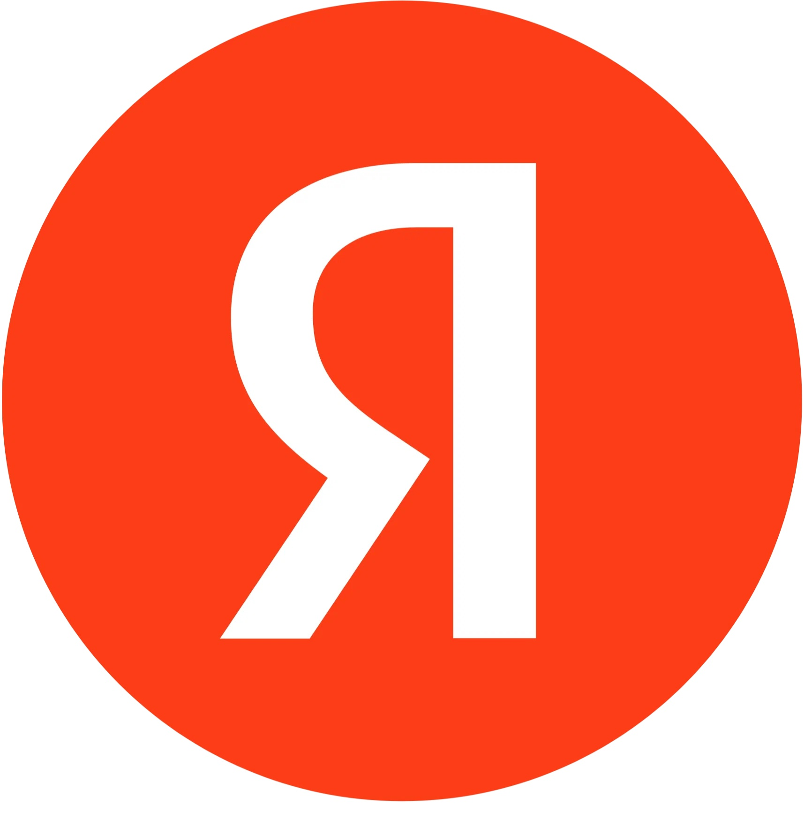
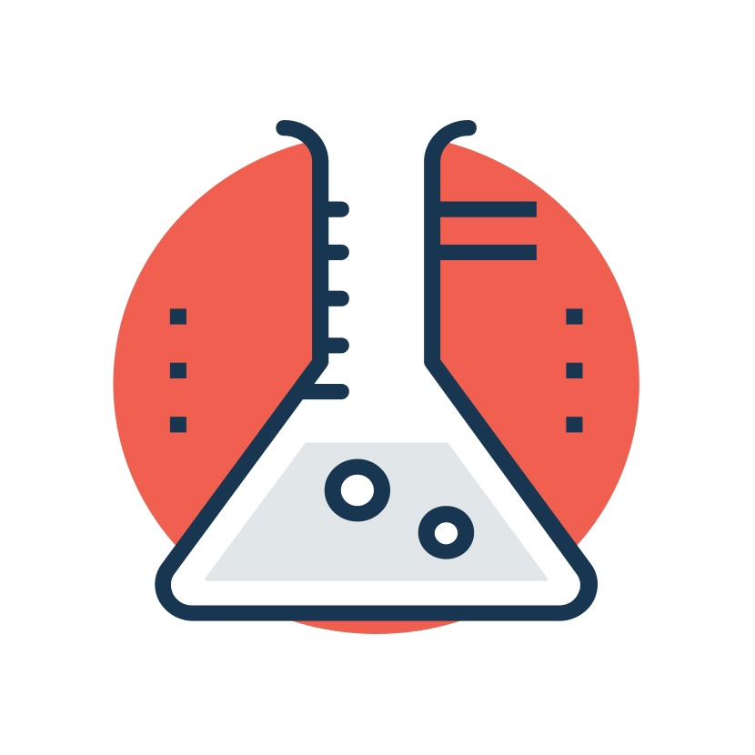

Онлайн-сервисы и платформы для создания тестов
На этой странице собрана полезная информация о различных платформах и сервисах, которые помогут создавать эффективные и интересные тесты. Здесь рассмотрены как онлайн-решения, не требующие установки, так и программы, которые можно скачать и использовать локально. Независимо от потребностей и бюджета, можно найти подходящий инструмент для тестирования знаний, проведения опросов или оценки навыков.
Онлайн-платформы для создания тестов – это удобное решение, позволяющее создавать, распространять и анализировать результаты тестов прямо в браузере. Они идеально подходят для тех, кто ценит гибкость, доступность и простоту использования. Ниже мы рассмотрим две популярные платформы:
| Сервис | Действия |
|---|---|
| Яндекс.Формы | Перейти |
| Madtest | Перейти |
В отличие от онлайн-платформ, программы для скачивания и установки предлагают больше контроля над данными и настройками. Они хорошо подходят для организаций с высокими требованиями к безопасности или тех, кому необходимо работать в автономном режиме.
| Сервис | Действия |
|---|---|
| My MyTestXPro | Перейти |